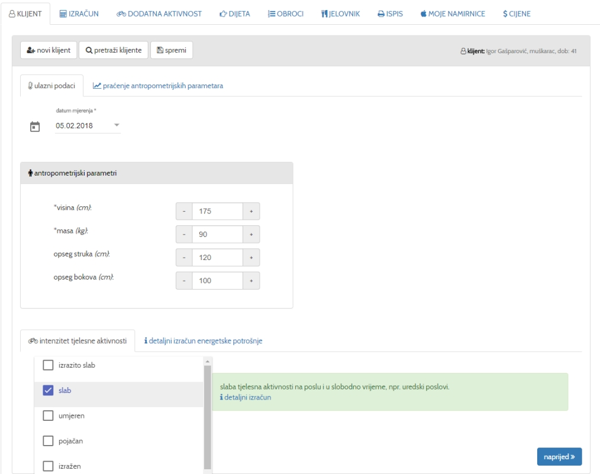
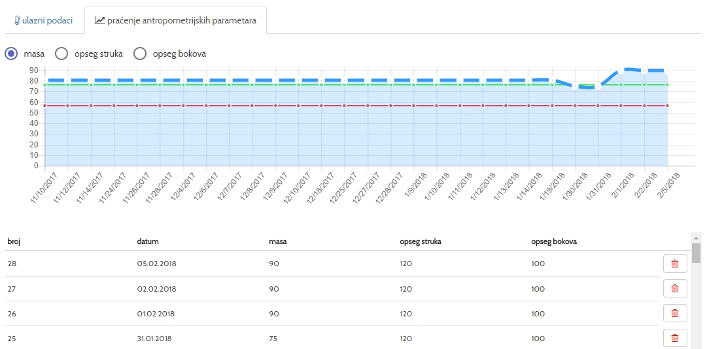
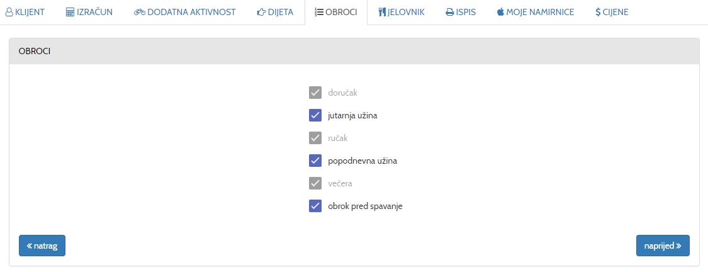
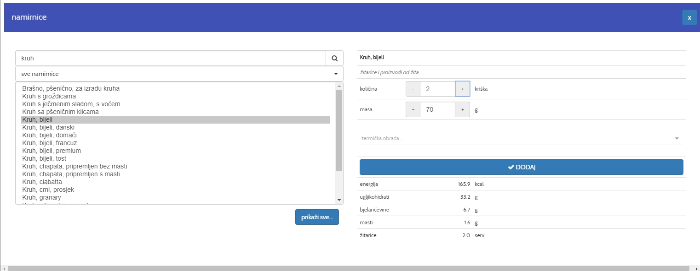
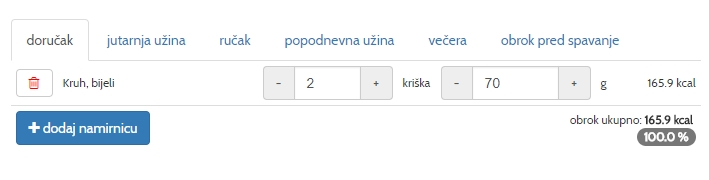
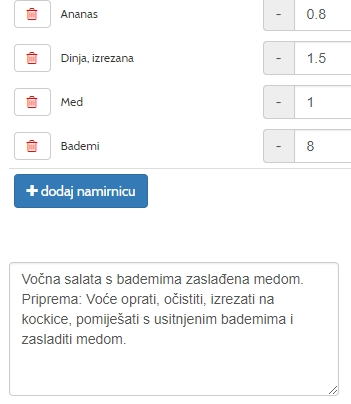

Nakon prijave u aplikaciju potrebno je registrirati novog klijenta ili iz baze klijenata odabrati postojećeg.
Klikom na dugmeNOVI KLIJENT otvara se pozor za unos novog klijenta.
Obavezni podaci su Ime, prezime, datum rođenja i spol, dok telefon i e-mail nisu obavezni.
Klikom na dugmePRETRAŽI KLIJENTE moguće je pristupiti klijentima koje ste prethodno spremili u bazu.
Ulazni podaci
Unesite visinu (u cm), masu (u kg) opseg struka i bokova (u cm) i intenzitet tjelesne aktivnosti
* Opseg struka i bokova nisu obavezan
Za nastavak kliknite naprijed
Ako želite preciznije odrediti dnevnu energetsku potrošnju kliknite na Detaljni izračun energetske potrošnje

Detaljni izračun energetske potrošnje
Klikom na Detaljni izračun energetske potrošnje otvara se prozor u kojemu je moguće napraviti detaljan izračun dnevne potrošnje.
Potrebno je unijeti sve aktivnosti i njihovo trajanje u periodu od 0:00 do 24:00
Za nastavak kliknite naprijed
Praćenje antropometrijskih parametara
Klikom na tabPraćenje antropometrijskih parametara otvara se prozor u kojemu se prate antropometrijski parametri u grafičkokm i tabelarnom prikazu.
Prate se masa, opseg struka i opseg bokova

Izračun
Nakon unesenih ulaznih podataka aplikacija daje izračun za indeks tjelesna mase (BMI), dnevnu energetsku potrošnju, omjer opsega struka i bokova
te preporuke za primjerenu tjelesnu masu, energetsku vrijednost jelovnika i dodatnu tjelesnu potrošnju.
U istom prozoru moguće je odabrati Cilj: redukciju tjelesne mase, zadržavanje postojeće tjelesne mase, povećanje tjelesne mase ili povećanje mišićne mase.
Za nastavak kliknite naprijed
Dodatna tjelesna aktivnost
Ukoliko aplikacija na osnovu ulaznih podataka da preporuku za dodatnu energetsku potrošnju, u prozoruDodatna aktivnost
možete odabrati dodatnu željenu aktivnost.
Klikom na odabranu aktivnosti program izračunava vrijeme potrebno za potrošnju preporučene dodatne energetske potrošnje.
Moguće je odabrati i više aktivnosti s time da je potrebno ručno promiijeniti trajanje aktivnosti.
Napomena: Osobe sa zdravstvenim problemima ili sumnjom na njih, prije odabira dijete moraju se posavjetovati sa svojim liječnikom.
Dijeta
U prozoruDijeta aplikacija automatski nudi redukcijsku dijetu ili normalnu prehranu ovisno o indeksu tjelesne mase (BMI).
Moguće je odabrati i druge vrste prehrane i dijete ovisno o potrebama ili zdravstvenom stanju.
Napomena: Osobe sa zdravstvenim problemima ili sumnjom na njih, prije odabira dodatne tjelesne aktivnosti moraju se posavjetovati sa svojim liječnikom.
Obroci
U prozoruObroci moguće je odabrati željeni broj i kombinaciju obroka.
Napomena: Doručak, ručak i večera su obavezni.

Izrada jelovnika
Za izradu jelovnika kliknite na tabJelovnik
Za odabir namirnica kliknite na tipkuDodaj namirnicu
U novom prozoru moguće je pretraživati namirnice po nazivu ili po skupinama namirnica
Odabranoj namirnici možete promijeniti količinu, masu i odabrati željenu termičku obradu

Kikom na dugmeDodaj odabrana namirnica se uvrštava od selektirani obrok

Kod izrade jelovnika vodi se računa da odabrane vrijednosti jelovnika budu unutar ili približno preporučenim vrijednostima
Vrijednosti koje se prate su: energetska vrijednost jelovnika, energetska vrijednost obroka, broj jediničnih serviranja pojedine skupine namirnica
mikro i makronutritivne vrijednosti i eneretska vrijednost ostalih namirnica
Preporučene i odabrane vrijednosti su prikazane grafički i numerički, sa naznačenim odabranim i preporučenim vrijednostima
Za prikaz mikro-nutrijenata i ostalih parametara kliknite na Parametri
Kada su ukupne vrijednosti jelovnika unutar preporučenih, jelovnik je gotov.
Jelovnik je moguće spremiti u bazu i kasnije ga koristiti kao predložak za izradu novog jelovnika
Jelovnik je moguće poslati na e-mail adresu klijenta.
Uz svaki obrok je moguće dodati opis npr. naziv i priprema jela

Ispis
Klikom na tabIspis otvara se prozor u kojemu možete dobiti ispis jelovnika, podata moguće je ispisati jelovnik, ukupne vrijednosti jelovnika i podatke o korisniku u PDF formatu ili na printer.
Kada je jelovnik izrađen za grupu korisnika sa jednakim energetskom potrošnjom, npr učenički domovi,
moguće je odabrati broj konzumentat tog jelovnika, pri čemu se dobiva ukupna količina namirnica za odabrani broj korisnika.
Također, moguće je odabrati i velićinu fonta u px
Moje namirnice
Aplikacija daje mogućnost unosa vlastitih namirnice i njihovih makro i mikronutritivnih vrijednosti.
Kod izrade jelovnika Mojim namirnicama možete pristupiti klikom na skupinu Moje namirnice
Napomena:
Ukoliko prilikom unosa vlastite namirnice ne odaberete vrijednost jediničnog serviranja za tu namirnicu, namirnica će biti svrstana u kategoriju
ostale namirnice.
Cijene
U prozoruCijene postoji mogućnost je unositi cijene namirnica
Odaberite namirnicu iz izbornika, upišite neto cijenu i masu i kliknite na dugmespremi
Napomena:
Potrebno je unositi neto cijene. Npr. kod krumpira je potrebno unaprijed ukalkulirati gubitak na masi kod guljenja kore.